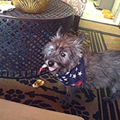

Local shelters are all around the Philadelphia area, and places like the Pennsylvania SPCA excel in finding the right dog for the right home.
The well respected Philadelphia PAWS organization has adoption centers all around the city, and is another great place to find kittens and puppies in need of a forever home!
Many local shelters rely solely on dontations to survive. Help your local shelter thrive today!
Zoe was found after Hurricane Sandy. They were unable to find her owners. Her new owner Ashley got her from a local shelter and she's such a sweetheart. She loves dogs, people, and babies.
Simon was a owner surrender, due to the previous owner being unable to care for the pup any longer. Even though Simon was put up for adoption at the age of 13, he still runs around and acts like a puppy!